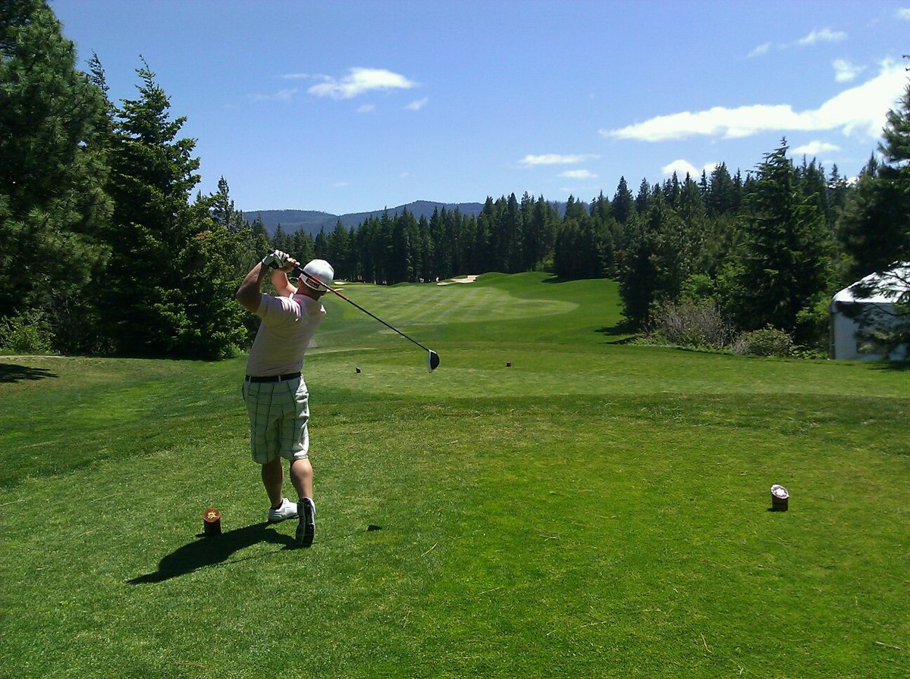
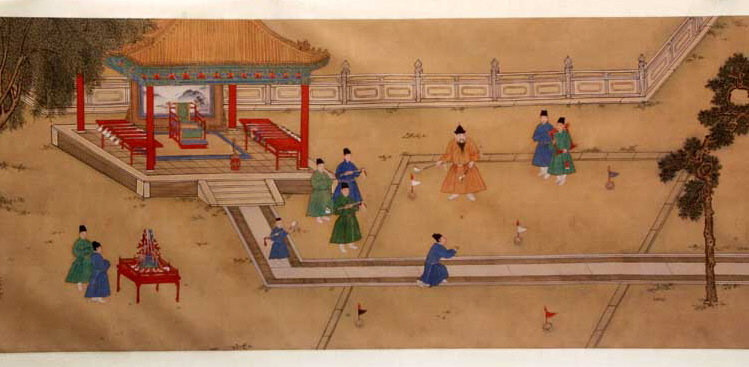

|  A golfer in the finishing position after hitting a tee shot | |
| Highest governing body | The R&A USGA IGF |
|---|---|
| First Played | 15th century, Kingdom of Scotland |
| Characteristics | |
| Contact | No |
| Type | Outdoor |
| Equipment | Ball, clubs, tee |
| Glossary | Glossary of golf |
| Presence | |
| Olympic | 1900, 1904, 2016, 2020 |
Golf is a club-and-ball sport in which players use various clubs to hit balls into a series of holes on a course in as few strokes as possible.
Golf, unlike most ball games, cannot and does not use a standardized playing area, and coping with the varied terrains encountered on different courses is a key part of the game. Courses typically have either 18 or 9 holes, regions of terrain that each contain a cup, the hole that receives the ball. Each hole on a course contains a teeing ground to start from, and a putting green containing the cup. There are several standard forms of terrain between the tee and the green, such as the fairway, rough (tall grass), and various hazards such as water, rocks, or sand-filled bunkers. Each hole on a course is unique in its specific layout.
Golf is played for the lowest number of strokes by an individual, known as stroke play, or the lowest score on the most individual holes in a complete round by an individual or team, known as match play. Stroke play is the most commonly seen format at all levels, especially at the elite level.
The modern game of golf originated in 15th century Scotland. The 18-hole round was created at the Old Course at St Andrews in 1764. Golf's first major, and the world's oldest golf tournament, is The Open Championship, also known as the British Open, which was first played in 1860 at the Prestwick Golf Club in Ayrshire, Scotland. This is one of the four major championships in men's professional golf, the other three being played in the United States: The Masters, the U.S. Open, and the PGA Championship.
|

Xuande Emperor of the Ming dynasty playing chuiwan
|
While the modern game of golf originated in 15th century Scotland, the game's ancient origins are unclear and much debated.
Some historians[3] trace the sport back to the Roman game of paganica, in which participants used a bent stick to hit a stuffed leather ball. One theory asserts that paganica spread throughout Europe as the Romans conquered most of the continent, during the first century BC, and eventually evolved into the modern game.[4]
Others cite chuiwan (捶丸; "chui" means striking and "wan" means small ball)[5] as the progenitor, a Chinese game played between the eighth and fourteenth centuries.[6] A Ming Dynasty scroll by the artist Youqiu dating back to 1368 entitled "The Autumn Banquet" shows a member of the Chinese Imperial court swinging what appears to be a golf club at a small ball with the aim of sinking it into a hole.[5] The game is thought to have been introduced into Europe during the Middle Ages.[7]